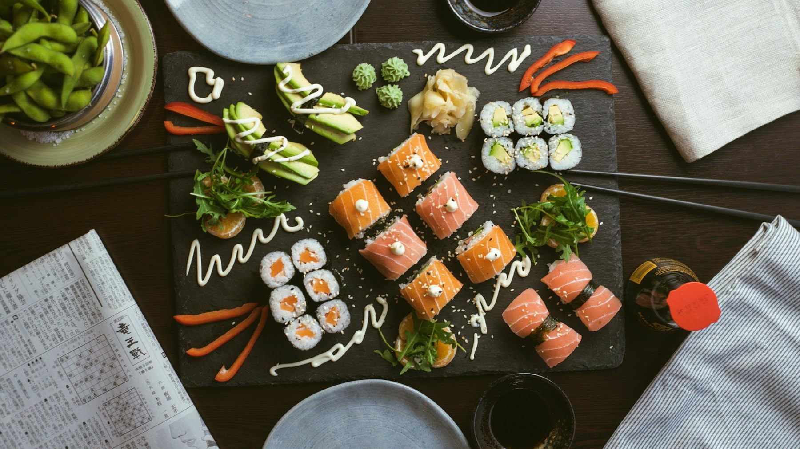
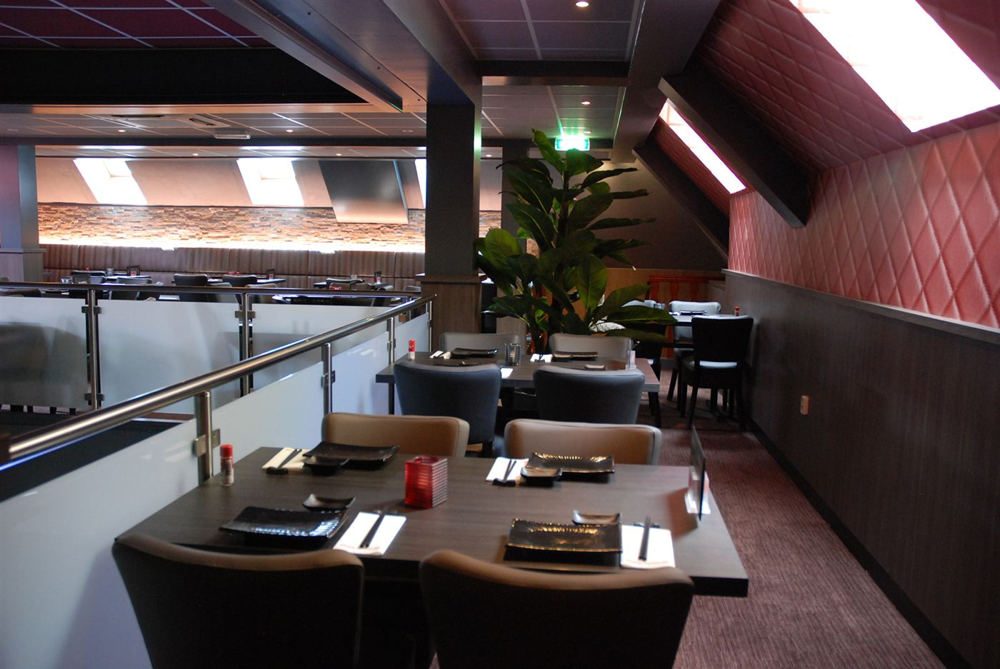
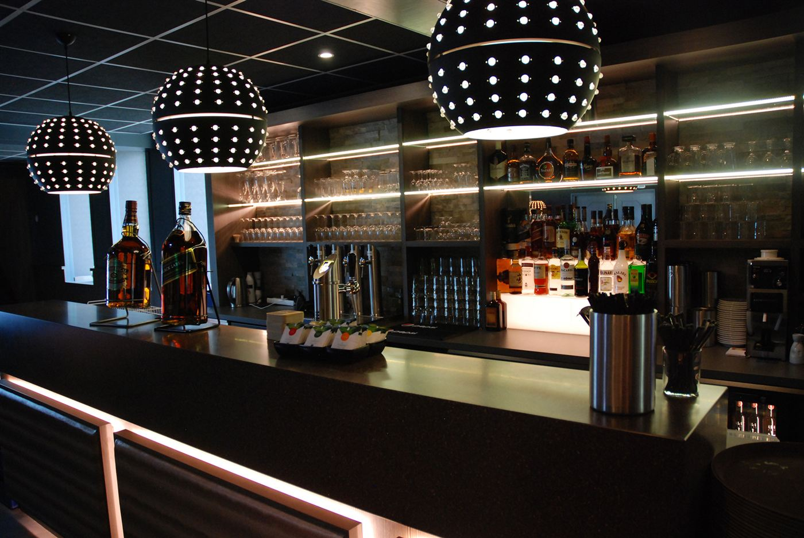
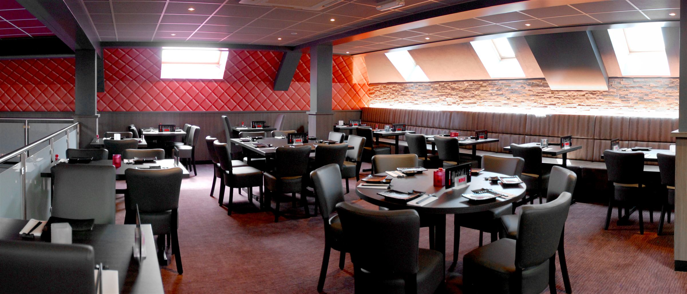
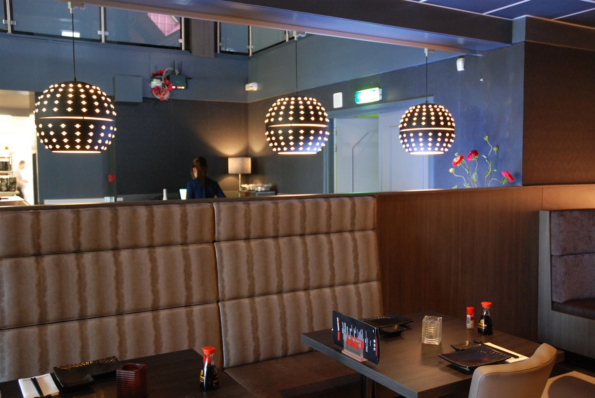
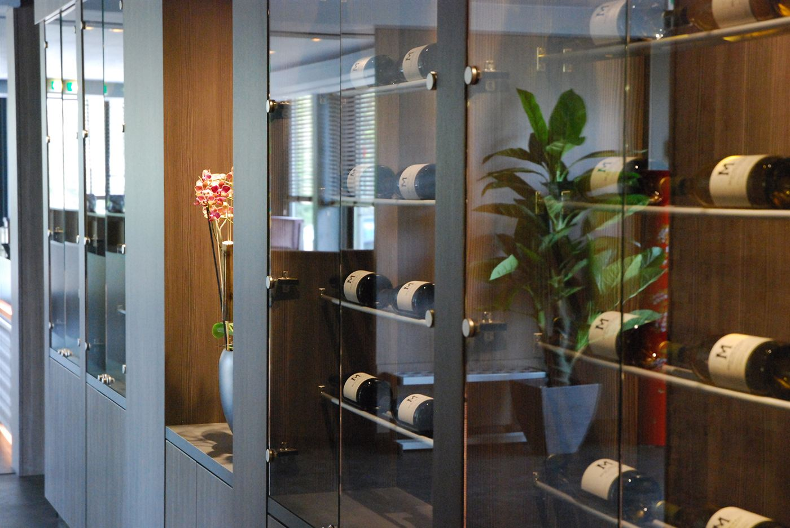
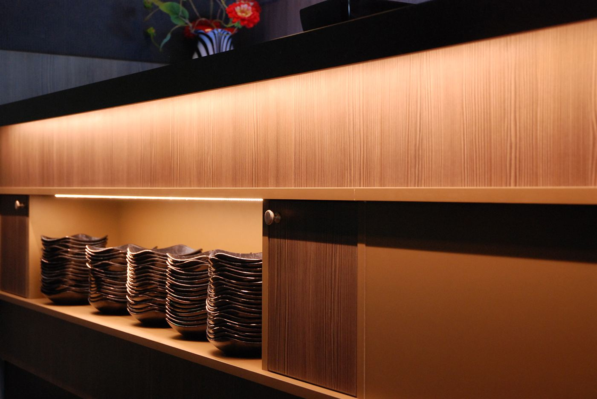

All you can eat
2,5 uur
- Dinsdag t/m donderdag
- € 34,95 p.p.
- Vrijdag t/m zondag
- € 36,95 p.p.
- Kinderen 2 t/m 10 jaar
- € 2,50 per levensjaar

All you can eat: sushi, teppanyaki en Japanse, Chinese en Chinees-Indonesische gerechten, met een uitgebreid dessertbuffet. Tweeënhalf uur aan tafel voor een vaste prijs.
vanaf € 34,95 p.p.
Liever thuis? Bestel online om af te halen
Bij Koko staat de wens van onze gasten centraal. Vers en smaakvol dineren in een gezellige ambiance maakt een avondje uit nog geslaagder.
Wij werken met het all you can eat-principe: u proeft van allerlei Aziatische gerechten voor een vaste prijs, in een moderne, stijlvolle sfeer. Naast sushi serveren wij Chinese, Japanse en Chinees-Indonesische gerechten, warm en koud.
En daarna? Dan wacht ons luxueuze dessertbuffet, met vers fruit, ijs, gebakjes en zelfgemaakte toetjes.
Bekijk de arrangementen

Zin in onbeperkt sushi? Kies hoe u wilt tafelen. Beide arrangementen duren 2,5 uur, het dessertbuffet is altijd inbegrepen.
2,5 uur
2,5 uur, inclusief tapbier, huiswijnen, frisdranken, koffie en thee
Wij schenken geen alcohol aan gasten onder de 18 jaar. Heeft u een allergie? Laat het ons weten, dan helpen we u graag.
Alles van onze kaart ook thuis: van nigiri en uramaki tot deluxe boxen, bento en poké bowls. Bestel online of bel ons, en haal het op aan de Hoofdstraat.
Beleef de Aziatische keuken op zijn best in hartje Epe.




Online reserveren kan tot 24 uur voor aanvang. Wilt u eerder komen, vandaag nog bijvoorbeeld? Bel ons gerust.
Bel 0578 623 393Of mail naar info@restaurantkoko.nl